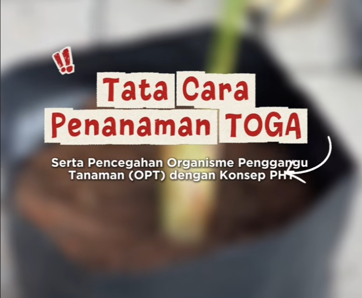
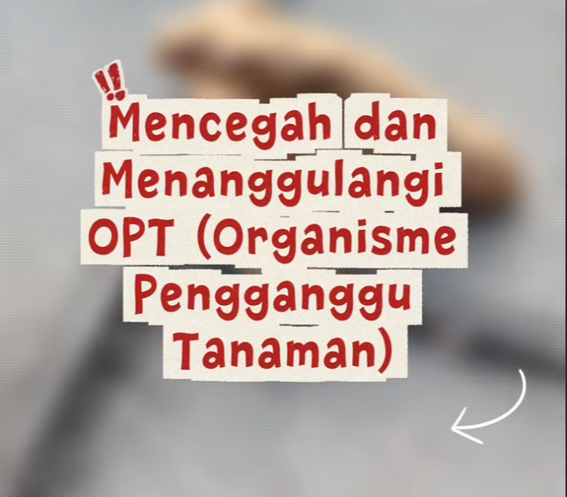
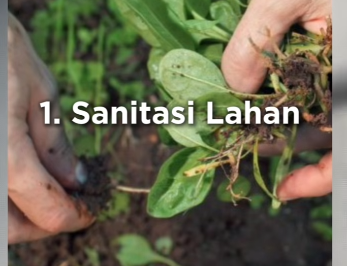
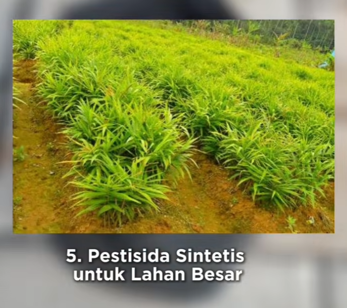

play_circle Video
Video Edukasi Penanaman dan Pencegahan Organisme Pengganggu Tanaman (OPT) pada Tanaman Obat Keluarga (TOGA)

play_arrow
Deskripsi
Video edukasi ini membahas langkah-langkah penanaman Tanaman Obat Keluarga (TOGA) serta upaya pencegahan Organisme Pengganggu Tanaman (OPT). Video disusun dengan materi yang sederhana dan mudah dipahami agar dapat menjadi media pembelajaran bagi masyarakat dalam membudidayakan TOGA secara tepat, sehingga tanaman dapat tumbuh sehat dan dimanfaatkan secara berkelanjutan.
Informasi Program
- group Sasaran
- Warga Masyarakat, Kelompok Tani
- location_on Lokasi
- Daring (YouTube)
- event Waktu
- Dapat diakses kapan saja
- category Bentuk Kegiatan
- Edukasi Digital, Video Panduan
photo_library
Dokumentasi Terkait



